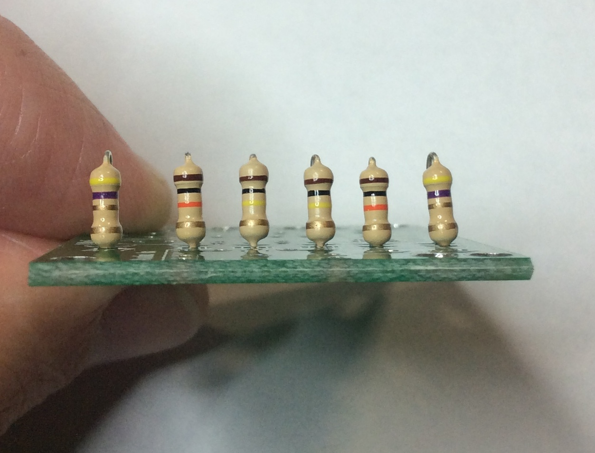
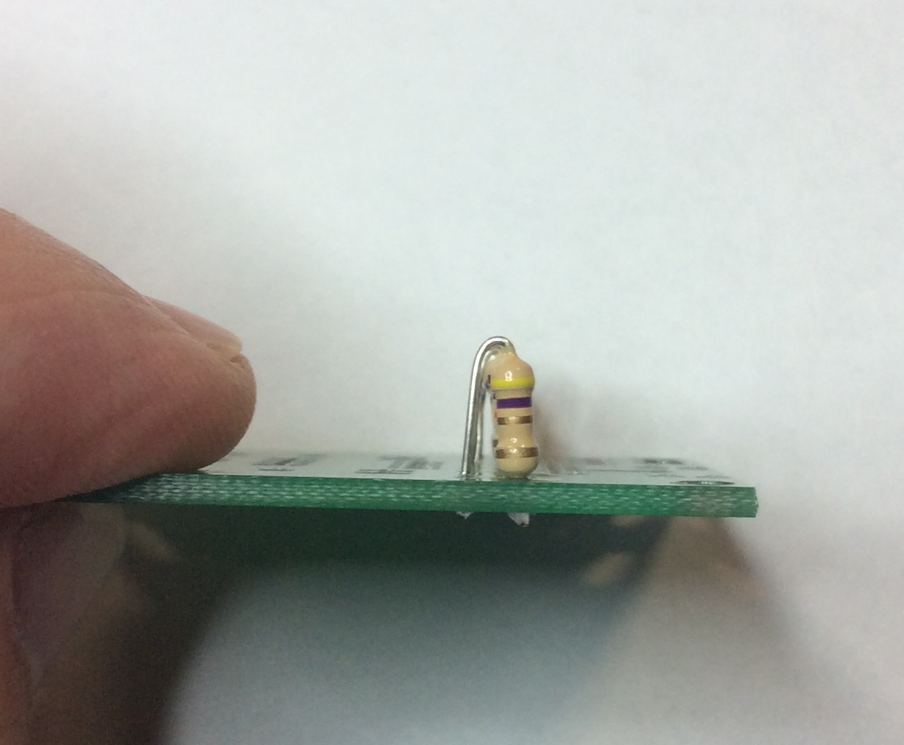
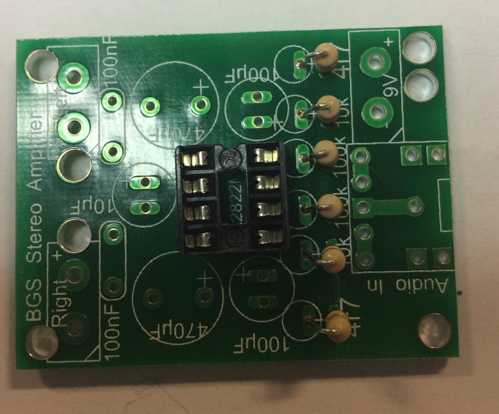
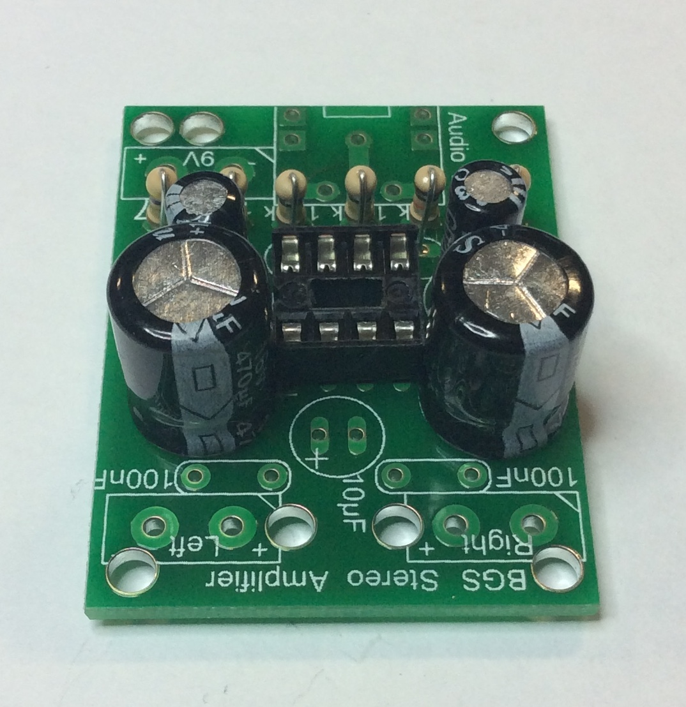
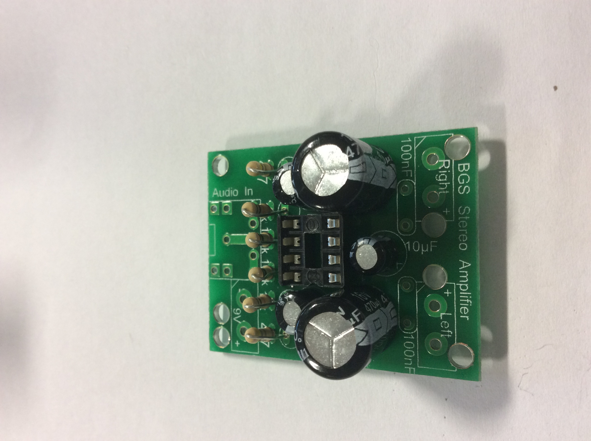
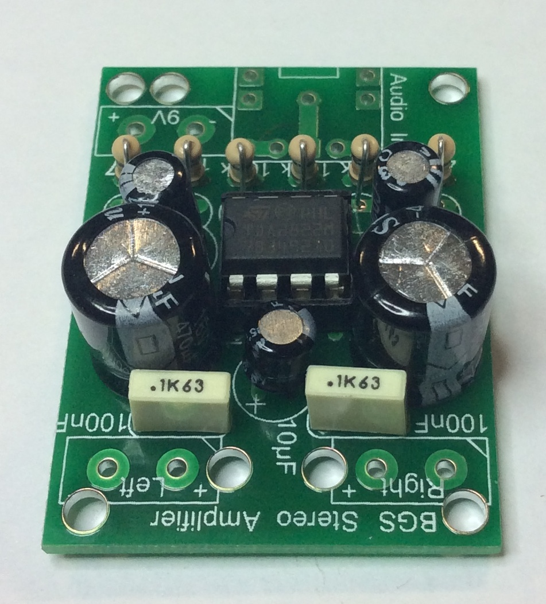

Soldering Time
Table of Contents

1 First steps
This project uses an IC (Integrated Circuit) chip containing many transistors and other components. These work together to amplify weak incoming signals from your 'phone, mp3 player or computer, and to send these stronger signals out through a pair of speakers, giving a nice loud, clear, stereo sound.
Start small
- When soldering a project together, it's best to start with the smallest physical components first. As with many projects, this will be your resistors. We've got a few different values we'll be using here.
- Make sure you use the right ones in the right places!
- You'll need:
- 2x 4r7 Resistors (Yellow, Purple, Gold, Gold)
- 2x 10k Resistors (Brown, Black, Orange, Gold)
- 2x 100k Resistors(Brown, Black, Yellow, Gold)
- Remember when soldering to keep your soldered joints neat! You should be a pro at soldering after three years, but here's a few tips to remember:
- The purpose of soldering is to join two metals together: The leg of the component, and the copper track on the PCB. This only works if both metals have been heated up before you try and put solder in to make the joint.
- After placing the soldering iron onto the PCB/leg, count to three in your head, then apply solder. This should be long enough to get the parts hot, but not so long that you burn the PCB tracks off.
- Remember to use side-cutters after soldering to trim off the excess of the leg you no longer want. Before you do this, make sure that your components are fitted as tightly to the board as possible. You can always melt the solder again and use a long-nose plier to pull the component through a bit more if needed!
- A good soldered joint looks like a little volcano standing up slightly on the board. You shouldn't be able to see the drill-hole any more, and the solder shouldn't be spherical.
- Solder the resistors in standing on end, with the other leg draped down into the hole. This way, they'll take up less space on the PCB. When they're done, and you look at the PCB from the either end of the board (it's symetrical at this stage), it needs to look like this:
 
- Let's do the chip carrier next. ICs like our amplifier don't really like getting hot, so by using a chip carrier (which is essentially a block of plastic with some metal legs in it), we can avoid ever having to expose the chip to any heat at all.
- The chip carrier needs to go in the right way up. The Silkscreen in the component side of the PCB has a notch in it, as does the chip carrier (and the chip). Make sure the carrier sits flat against the PCB before you solder the first pin, and inspect it once its soldered. If need be, melt the solder and push the socket in so it sits as flat as possible. You don't want to need to de-solder all 8 pins if you get this wrong!

Connecting Capacitors
- Capacitors make up a large number of the components in our circuit, and perform a number of functions. As a stand-alone component, they build up a store of a small amount of electrical charge (measured in Farads), which is released into the circuit when needed.
- There are two different types of capacitor; Electrolytic/polarised (the black circular ones), and non-polarised. The polarised variety must be connected the right way around (you'll notice a + on the PCB silkscreen) - the non-polarised ones can be mounted either way round.
- Polarised capacitors have a row of minus (-) signs along the edge with the negative leg. Additionaly, before you use side-cutters on them, the positive leg is normally longer.
- Start with the 470μF capacitors (the largest), then the 100μF capacitors, making sure you get them the right way around. These go either side of the IC, and both the value and orientation are clearly labelled.

- Add the lone 10μF capacitor next…

- Then the two 10nF non-polarised capacitors. While it doesn't matter which way round they go, it looks more professional if they're both the same way up. Try to get them standing up nice and straight, too.

- You've now completed the circuit components for the project. Next, we'll need to add the speakers, a battery clip and a socket to connect to your mobile.
BadgeIt - Build Stage 1
- Take a photo of both sides of your PCB.
- Open your previous Word document, and add a new sub-title called, "Soldering".
- Add (and crop) the pictures of both sides of your board.
- Underneath, write a short paragraph explaining what you have done so far.